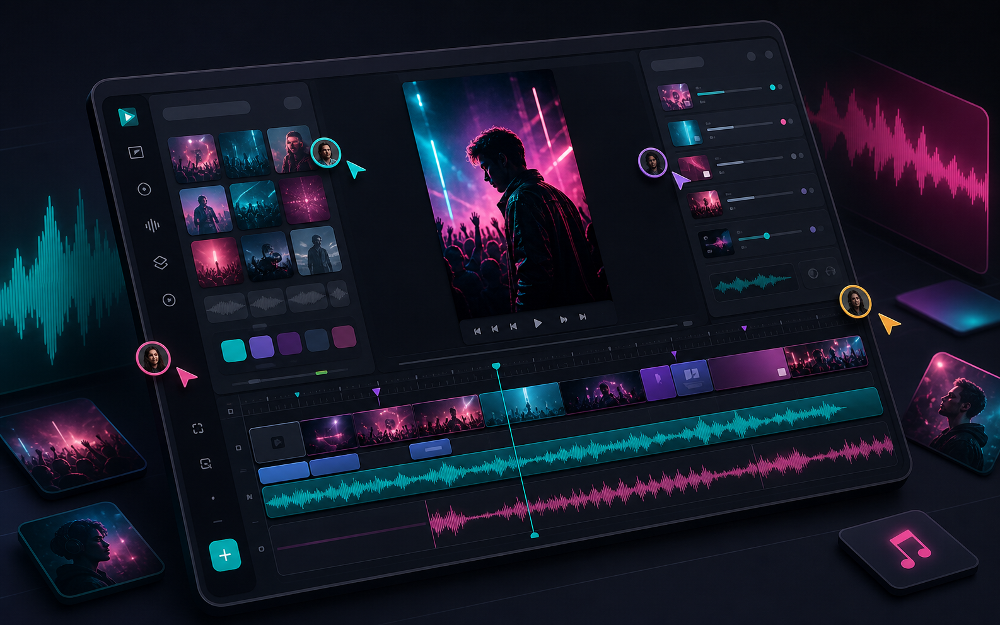
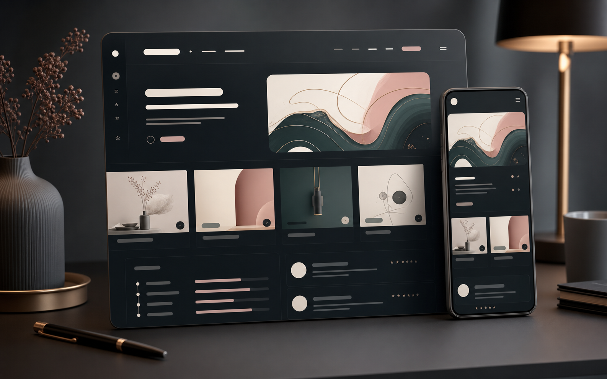
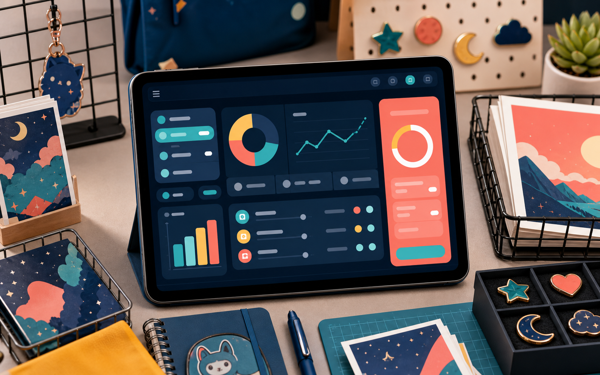
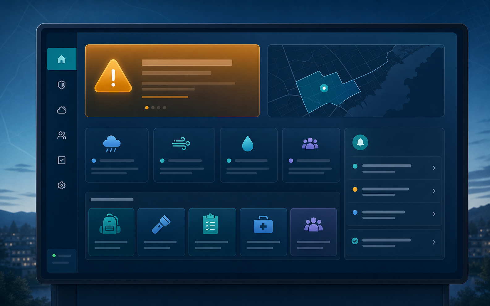
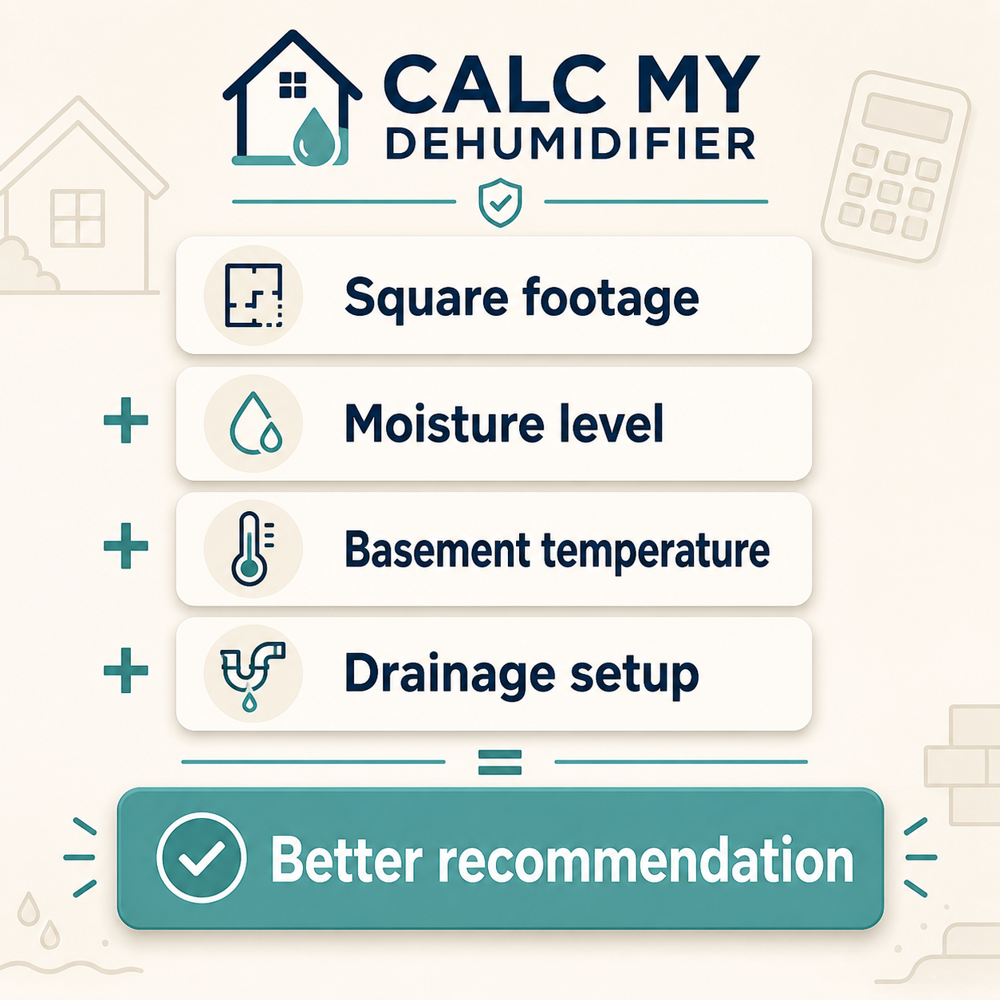

Working / React / Vite / Web Workers
Live
Browser Tool
SRT Fixer
Browser-only subtitle cleanup for Reels, Shorts, TikToks, and podcast clips. Preserves timestamps in clean-text mode, adds batch/pro licensing paths, and keeps files local.

Local WIP / Remotion / Multi-Editor
In Development
Local Tool
Genera Reels Web
Local project expanding the original Genera idea from a single editor into a multi-editor system for generating social reels for music campaigns.
Local build

WIP / TypeScript / Remotion
In Development
Research Prototype
Real Estate Reels
Developer workflow for preparing branded vertical listing videos with Remotion, using templates for Just Listed, Open House, and Just Sold render experiments.

Portfolio / Eleventy / SEO
Live
Family Project
Caitlin Portfolio
Hiring-focused portfolio for my wife, migrated to Eleventy with shared layouts, SEO hardening, and structured build outputs.

Launched / React / TypeScript
Live
Niche Calculator
Artist Alley Break-Even
A convention calculator for vendors deciding how many prints, charms, stickers, or commissions they need to sell before a table breaks even.

Civic Demo / Next.js / NWS API
Demo
Civic System
Peabody Ready Hub
Local emergency preparedness dashboard that turns official weather alerts and static hazard guidance into plain-English resident action cards.

Launched / TypeScript / Affiliate UX
Live
Painpoint Research
Dehumidifier Sizing Calculator
Shopping calculator born from homeowner pain points: old 70-pint labels no longer map cleanly to modern DOE dehumidifier ratings.

Remotion / React / Video Generation
Prototype
Render Engine
Genera-Reels
Programmatic short-form video generator using Remotion compositions and structured payloads to produce repeatable vertical reels.